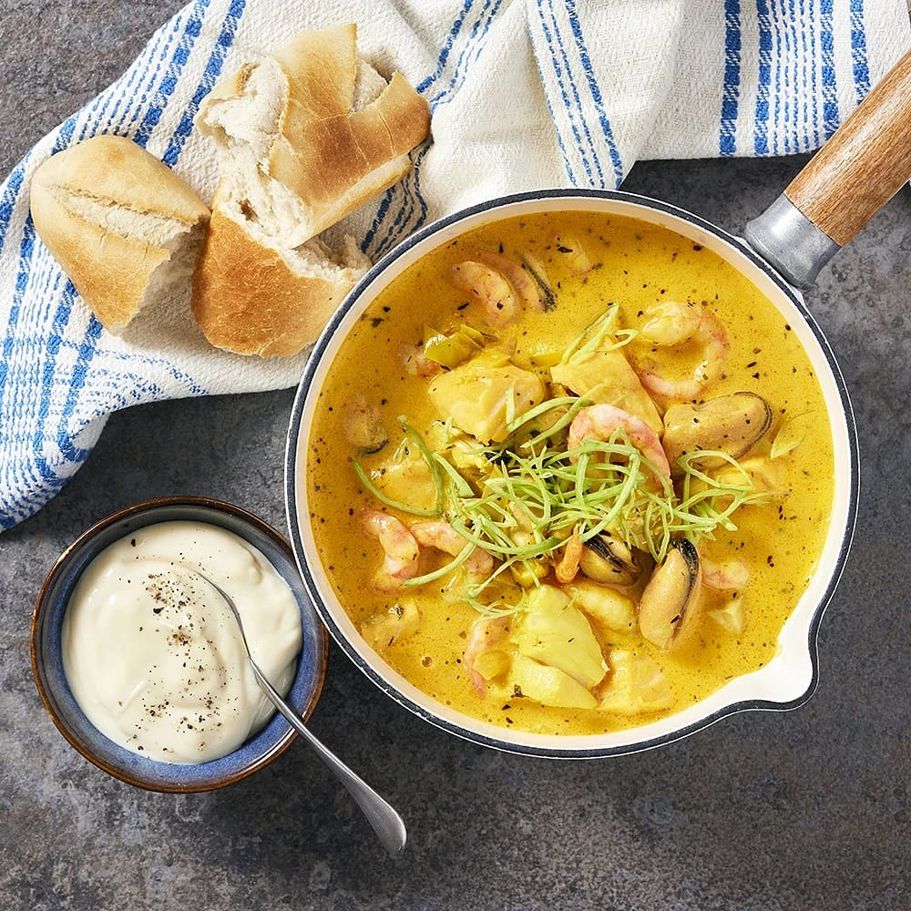

Fiskgrytan

En läcker fiskgryta med en lysande gul färg och ljuvlig smak. Passar både till att bjuda på en sällskaplig middag så väl en lyxig hemmakväll.
Förberedelse: | Tillagning: | Total tid: | Svårighetsgrad: Medel | 4 portioner
Näringsvärde per portion: 450 kcal
Ingredienser
- 400 g Torskfilé
- 300 g Laxfilé
- 1/2 st Purjolök
- 1/2 st Gul lök
- 1 msk Smör eller olivolja
- 1 st Vitlöksklyfta
- 1 1/2 tsk Tomatpuré
- 1 tsk Torkad timjan
- 1 tsk Torkad basilika
- 2 1/2 dl Torrt vitt vin
- 1 1/2 Fiskbuljongtärning
- 2 dl Grädde
- 1 dl Créme fraîche
- 2 dl Vatten
- 1 pkt Saffran
- 300 g Räkor med skal
- 1 st Burk musslor (á 150 g)
- Salt och peppar efter smak
Till servering
- Färskt bröd
- Aioli
Instruktioner
- Tina fisken (om fryst används). Skölj, ansa och strimla purjon. Skala och hacka löken.
- Smält smöret i en stor gryta eller tjockbottnad kastrull. Fräs löken och purjolöken (spara lite till servering) ett par minuter tills de blivit glansiga och genomskinliga. Pressa i vitlök. Rör ner tomatpuré, timjan och basilika. Låt detta fräsa med en kort stund.
- Tillsätt vin och buljongtärning. Koka ett par minuter. Rör ner vispgrädde, crème fraiche, vatten och saffran. Sjud i 15 minuter. Smaka av med salt.
- Skär fisken i munsbitar, lägg i grytan och sjud i ytterligare 7 minuter.
- Skala räkorna. Häll av musslorna och tillsätt dem och räkorna i grytan. Låt allt bli varmt, men inte koka. Smaka av med salt och peppar.
- Strö över den sparade purjolöken.
- Servera fiskgrytan med färskt bröd och aioli.